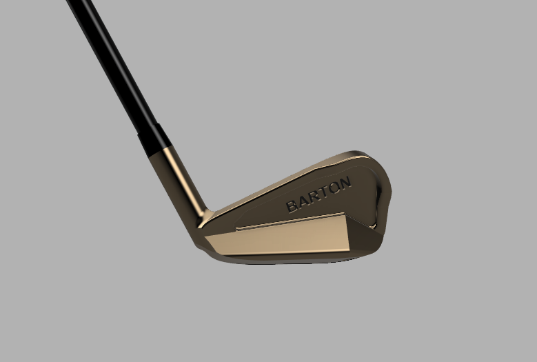
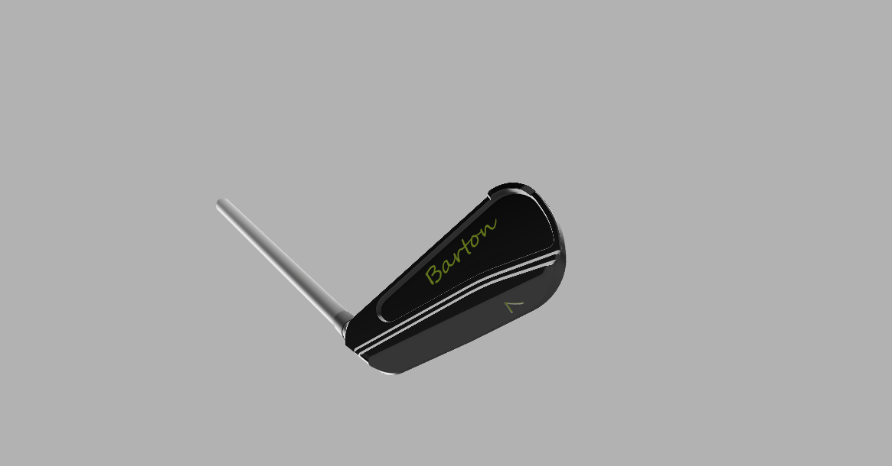
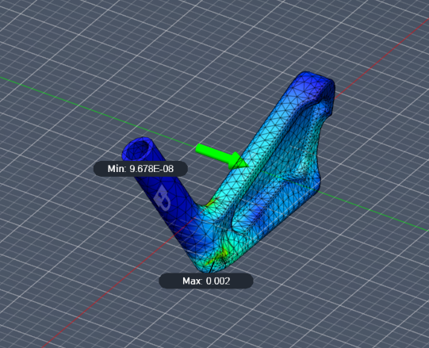

Personal · Active
Seven Iron
A parametric iron head machined from 1018 steel, built so the performance characteristics can be tuned to an individual player's miss. Substantially harder than the putter in every direction.
- Material
- 1018 steel
- Stock cost
- ~$80 per part
- Parameters
- Face angle · shaft angle ·
toe and base mass · hosel - Analysis
- FEA on face and body
- Workholding
- Custom soft jaws
- Setups
- Multiple, long reach
- Ideal process
- Forge then finish machine
- Status
- Prototype near final
A step up from the putter
The putter let me focus on manufacturing and mass properties. An iron adds real ball interaction physics: launch angle, spin, gear effect and forgiveness all depend heavily on geometry and where the mass sits. That makes the design substantially more involved in CAD and requires actually understanding the mechanics rather than working to a mass target.
The goal was a fully customisable iron where the performance characteristics can be tuned to the player. Golfers deliver a club differently, so rather than design for an average swing I wanted something adjustable to specific tendencies.

Parametric design
The CAD was considerably harder than the putter. Iron geometry is not simple, especially when you are trying to control how the club interacts with the ball rather than just how it looks. Face, sole and the transitions between them took the bulk of the modelling time.
The model is fully parametric on the variables that matter: face angle, shaft angle, toe weighting, base weighting, face dimensions and hosel geometry. The intent is that a consistent miss can be partly compensated in the hardware: a player who leaves the face open at impact gets a different weight distribution rather than a different lesson.


The physics that drives the geometry
A large part of this project was reading rather than modelling: gear effect, launch conditions, and how moment of inertia governs forgiveness and spin. Small geometry changes move ball flight noticeably, which is exactly what makes the club worth parameterising.
I ran FEA on the face and body under load. The absolute numbers matter less here than the trends: I wanted confirmation that the structure was stiff enough and that stress was not concentrating somewhere I had not intended. Most of the design decisions came from keeping the club stable while leaving room for adjustment.

Manufacturing
This part is far harder to machine than the putter. The geometry needs multiple setups and careful workholding, so I designed custom soft jaws to hold it securely through each operation. Some features need long reach into the part, which means long endmills.
Long endmills mean chatter. I worked through feeds, speeds and setup rigidity to get an acceptable surface, and some of the setups along the way were not elegant. They cut the part.


Failure Seven iron · Surface finish
Long tools, deep features, and chatter I could not fully tune out
Reaching the internal features required tool lengths where deflection and chatter dominate. I improved it substantially with feeds, speeds and rigidity changes but never eliminated it, and at $80 a blank the experiment budget is small.
Fix
The right process for this part is forging and then finish machining. Full CNC from solid was the accessible option and it gave me geometric control, but it is not how this part wants to be made.
Trade-offs
Cost dominates this project in a way the putter never did. Raw stock is around $80 per part, so a scrapped piece is an expensive lesson and the appetite for iteration is correspondingly low. That changes how you work: more time in CAD, more printed check models, fewer swings at the machine.
There were also real conflicts between design intent and manufacturability. Shapes that made sense for performance were awkward to cut cleanly, and some of them got compromised. That negotiation, between what the part wants to be and what the process will give you, ended up being as much of the project as the golf physics was.
The current prototype is machined from 1018 and close to final. There is finishing work left, but the geometry and structure are set. Once it is done it becomes the baseline for a full set built on the same parametric model.